00 · Статус
Что закрыто и что осталось
Стенд был полностью остановлен (OrbStack, не только контейнеры) — поднял заново. Сборка приложения актуальна: собрана после последнего коммита, никаких исходников поверх неё не менялось.
| Что | Состояние | Комментарий |
|---|---|---|
| Стенд | поднят | приложение :8081, ядро и база отвечают, сборка = последний коммит |
| Приложение: тесты | 779/779 🟢 | 94 файла, включая страж дизайн-системы |
| Ядро: тесты | 22 падения | 1101 прошли; 1 падение от незакоммиченной миграции, 21 — пре-существующие (платежи/VK), воспроизводятся и без чужих правок |
| Пуш | заблокирован | удалёнка по HTTPS, gh не авторизован — вся работа лежит локально |
| Незакоммиченное в ядре | чужая работа | висит с 15.09 14:52: 2 MSP-контроллера, phpunit.xml, миграция, session-док. Не коммитил: цикл красный |
Мой остаток по вашим пунктам
- Экран «Безопасность»: устройства и активные сессии, связанные мессенджеры (MAX/VK/Telegram) с инструкциями по привязке, видимый маршрут оповещений, назначение e-mail (оповещения или только восстановление).
- Типографика: решение по дисплейному/заголовочному начертанию — сейчас весь интерфейс на Inter, отсюда ощущение «шрифт не выбран».
- Избранное на сервер: эндпоинт в ядре и синхронизация между устройствами (сейчас список живёт на устройстве).
- Сплошной обход тем: светлая и тёмная по всем экранам (в аудите — точечно).
- Долг дизайн-системы: радиусы 162 литерала (39 из них вне шкалы), тени 25, цвета 351 — свести к токенам. Уровень зафиксирован стражем, расти не может.
- Правило канона «выбрано = тиффани, розовый = действие» — выровнять по приложению (сейчас соблюдено не везде).
- Противоречие в каноне: шаг блоков 24px в
docs/04, 28px вlovii.css, 14–16px в демо — нужен ваш выбор одного значения.
Передача: кому какое задание
| Задача | Кому | Что считается сделанным (коммит — часть DoD) |
|---|---|---|
Незакоммиченный цикл MSP в ядре (branch_id, phpunit, миграция, док 029) |
Кодеру уже в работе: файлы трогали минуту назад, ветка feat/sz-045-chargeback-mirror |
Доделать и закоммитить; тест UserTest обновить под новую колонку (сейчас 17 ключей против 16) — иначе цикл красный |
| 21 падение в ядре: платежи TBank, VK-каналы, регистрация лисенеров | Кодеру | Воспроизводятся и без чужих правок — отдельная задача техдолга ядра, к дизайну отношения не имеет |
| Экран «Безопасность» (устройства, мессенджеры, маршрут оповещений, назначение e-mail) | Дизайнеру (структура, состояния, тексты, вёрстка) + кодеру — только если нужен эндпоинт устройств/сессий |
Экран в приложении + состояния (пусто/загрузка/ошибка) + работающие привязки; коммит в staging + session-док |
| Типографика: дисплейное начертание для заголовков | Дизайнеру | Решение + токены/миксины + прогон по заголовкам; коммит + session-док |
| Избранное на сервер (синхронизация между устройствами) | Кодеру (эндпоинт и таблица в ядре) + дизайнеру (переключить клиент на API) | Клиентская часть уже готова и работает на устройстве — осталось серверное хранилище |
| Обход светлой/тёмной темы и долг ДС (162 радиуса, 25 теней, 351 цвет) | Дизайнеру/фронтендеру | По экрану за проход, замена литералов на токены; страж не даст добавить новые |
Правило фиксации одинаково для всех: код + зелёный гейт + session-док
docs/sessions/NNN-… (в приложении следующий номер — 115, в ядре — свободный после 030)
+ запись в lovii-docs/status.md — и коммит. Пуш отложен до восстановления доступа к GitHub.
01 · Метод
Как проводился аудит
Прошёл по трём слоям: токены дизайн-системы (что интерфейс реально наследует), разметка и стили экранов (как блоки и кнопки уложены в потоке), живой стенд (что действительно доходит до пользователя). Автоматика — сборка, типы и unit-тесты; живой слой — сценарии на реальном стенде с авторизованной сессией.
Системной зацепкой стал инвентарь «используемые против определённых токенов ДС»: разница между ними и дала главную причину «неоформленных» блоков.
Найдено и подтверждено
- 16 имён CSS-токенов, которые код использовал, но дизайн-система не определяла — свойства отбрасывались браузером целиком.
- 16 экранов с отступом снизу 60px при высоте таббара 64px — низ уходил под навигацию.
- Функционал избранного отсутствовал полностью: была подсказка в профиле, но ни кнопки, ни хранилища.
- Саджест адреса оставался открытым после выхода из поля и перекрывал следующее.
02 · Дизайн-система
Корневая причина «блоков как будто без оформления»
Компоненты писали background: var(--background-…), border: … var(--border-…)
на имена, которых в слое токенов не было. Браузер в таком случае отбрасывает
свойство целиком — блок остаётся без фона, рамки или цвета. Больнее всего это
било по сегмент-контролю «Способ получения» на чекауте и по карточке/квитанции заказа.
| Токен в коде | Где использовался | Замаплено на канон |
|---|---|---|
--Text-Base-Normal-primary-on-brand--Text-Base-Normal-secondary | Сегмент-контроль (в т.ч. чекаут) — подпись и иконка выбранного сегмента | --content-normal-primary--content-normal-secondary |
--bg-primary · --stroke-border · --text-solid | Экран заказа (ProfileOrder) — карточка и квитанция | --lv-card · --lv-line · --lv-ink |
--content-brand-solid | Инфо-лист точки | --lv-pink |
--content-normal-success · --content-normal-error · --content-normal-disabled · --content-normal-on-solid | Business-экраны, вход по ссылке, тост | --feedback-positive-solid · --feedback-negative-solid · --content-other-disable · --lv-on-brand |
--background-other-{disabled,soft-accent,soft-press,solid} | Профиль, шит быстрого входа, тост | --lv-grey-soft · --lv-soft-pink · --lv-ink |
--lv-ink-soft · --lv-red | Заглушка чатов, настройки | --lv-dim · --feedback-negative-solid |
Маппинг живёт в src/scss/tokens.scss блоком «компат-алиасы ДС» и резолвится через
var()-индирекцию, поэтому работает в обеих темах автоматически. Снапшот канона
lovii-tokens.scss не трогался.
03 · Кнопки
Кнопки-фиксаторы сценария больше не уходят под навигацию
Канон токенов прямо предписывает брать нижний отступ от --lv-navbar-offset
(64px + safe-area). 16 экранов вместо этого брали 60px — ровно на 4px меньше высоты
таббара, а на iPhone без offset под «чёлку» и больше. Последняя кнопка или блок
визуально липли к навигации, а иногда не доскролливались. Всё сведено к токену,
включая прижатые снизу CTA и sticky-фильтры.
| Группа | Экраны |
|---|---|
| Витрина и каталог | StoresCatalog, CatalogFilters (липкие фильтры), PopularStores, StoreModule |
| Заказы и корзина | CartModule, CreateOrder (CTA уже по канону), ProfileOrder, OrdersModule |
| Профиль и адреса | ProfileModule, ProfileSkeleton, ProfileAddresses, AddressForm, ProfileEditSkeleton, EmailVerify |
| ЛОВИ Бизнес | BusinessLanding (CTA), BusinessApply (CTA), BusinessStatus, BusinessResult |
Проверено вживую
Отступ под таббар на экране заказов — 72px (64 + 8 воздуха). Кнопки и фильтры доступны, экран прокручивается до конца.
04 · Адрес
Саджест не мешает следующему полю, в хедере — только улица
Саджест. При вводе города или улицы выпадали подсказки и оставались открытыми после перехода к следующему полю — тап по «Дом» не проходил, а отложенный запрос мог заново открыть список уже поверх нового поля. Теперь уход из поля закрывает список и «глушит» висящий запрос; тап по самой подсказке поле не теряет, поэтому выбор срабатывает.
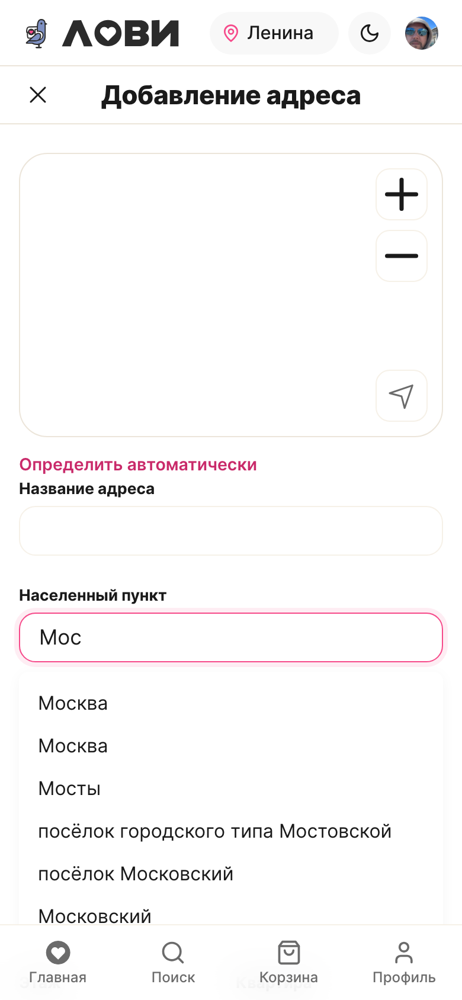
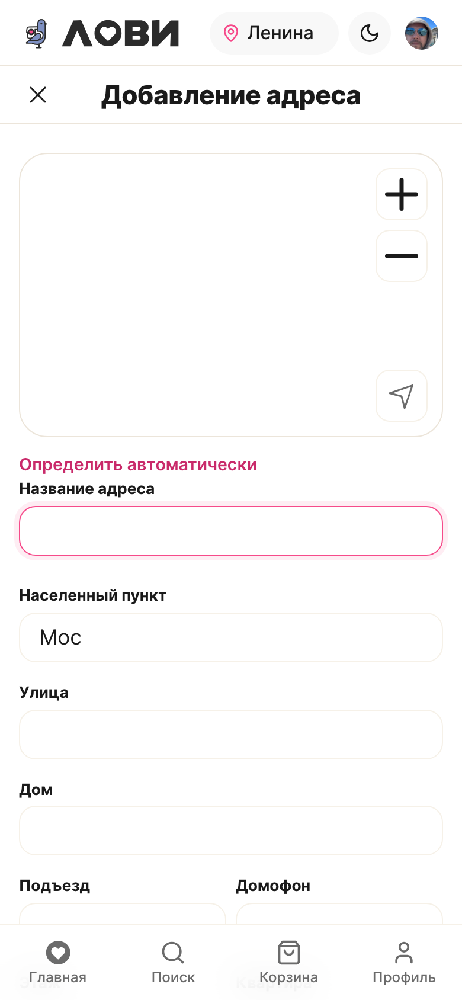
Хедер. Показывал «Санкт-Петербург, улица Л…» и обрезался на 76px — по адресу нельзя было понять, куда везти. Теперь пилюля отдаёт только название улицы, без города и без типового слова, и растянута на всю ширину до профиля.
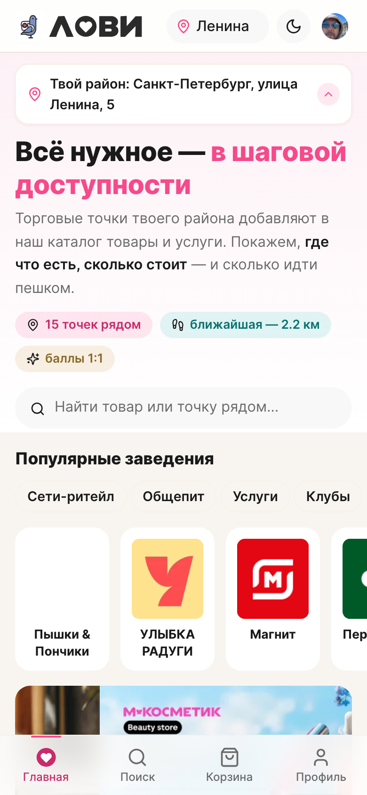
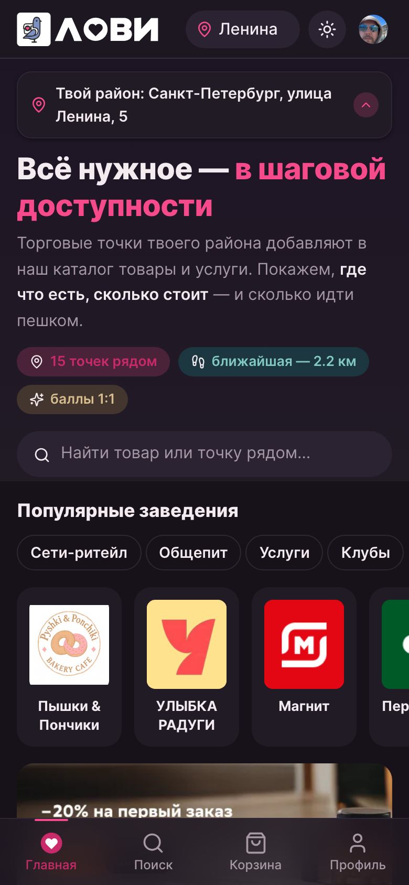
05 · Избранное
Избранное с витрины вернулось, список в профиле — живой
Раньше в профиле была подсказка «Жми ♥ на партнёре», а самой кнопки и хранилища не существовало: добавить точку было негде. Теперь ♥ стоит на карточке витрины и на странице точки, а блок «Избранные МСП» показывает реальный список со ссылками и снятием из избранного.
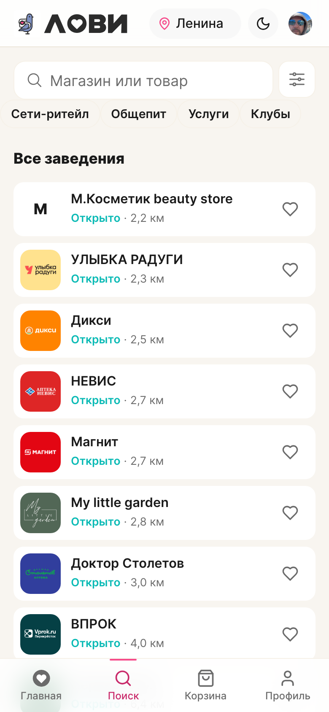
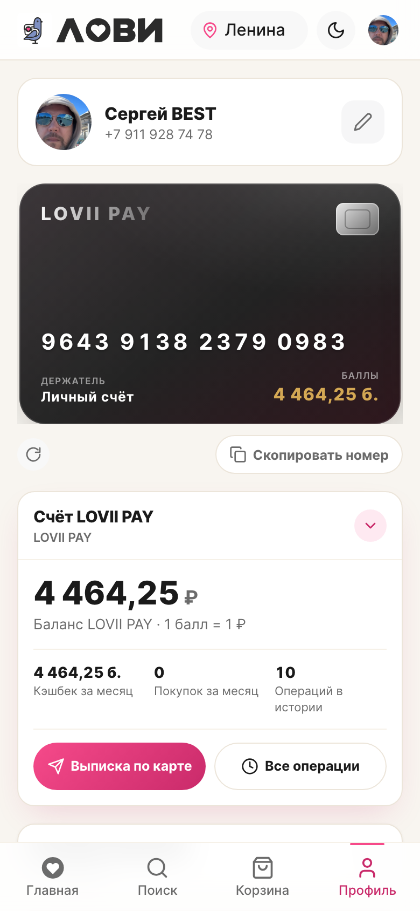
Как это спроектировано
Первый подход был механическим: канонная плавающая пилюля из демо пересажена в компактную строку списка, а под неё зарезервировано 36px отступа — то есть наклейка поверх текста плюс костыль, который её «расчищает». Разобрал по сути:
- Аффорданс один, видов два. Иконка и её состояния одинаковы везде; по контексту меняется только контейнер. Это то, что делают зрелые продуктовые системы: язык состояния един, подача — по месту.
- Строка списка → колонка карточки. Карточка стала сеткой
[логотип | текст | действие]: избранное больше не перекрывает текст и не требует отступа-заплатки, а название получило полную ширину (246px против ~150px). - В списке иконка тихая, на странице точки — заметная. В списке из 15 карточек брендовое сердце на каждой превратилось бы в шум и спорило бы с названиями; на странице точки сохранение — самостоятельное действие, там уместна плавающая пилюля.
- Состояние читается без пояснений: контур — не в избранном, залитое брендовое
сердце — в избранном; в разметке это
aria-pressedи живойaria-label(«В избранное» ↔ «Убрано из избранного»). - Тап-таргет 44px у тихой иконки — она выглядит мелкой, но промахнуться нельзя.
- Один компонент вместо трёх копий — стиль, состояния и доступность правятся в одном месте и не разъезжаются между экранами.
| Было (механически) | Стало (по месту) |
|---|---|
| Пилюля поверх текста в узкой строке | Отдельная колонка действия в сетке карточки |
| 36px отступа — заплатка, «расчищающая» текст | Никакой заплатки: сетка сама резервирует место |
| Три разных реализации в трёх файлах | Один компонент, два контекстных вида |
| Глиф размером с кнопку (ошибка селектора) | Глиф 20px, тап-таргет 44px — замерено на стенде |
| Статус точки — отдельным столбцом справа | Статус — в строке метаданных: «Открыто · 0.4 км · заказ от 500 ₽» |
Важное ограничение фазы 1
Серверного эндпоинта избранного в ядре (lovii-core) нет — ни таблицы,
ни маршрута. Поэтому список хранится на устройстве и не синхронизируется между устройствами.
Возврат функциональности сделан на клиенте; сквозная синхронизация — отдельная задача ядра.
05 б · Витрина
Страница «Все заведения»: плитка, статус, действие
Список ближайших точек проработан по концепции. Было три мелочи, которые вместе давали ощущение небрежности: у плитки логотипа грубый радиус 4px, картинка магазина не обрезалась по контуру и могла вылезать за скруглённый угол, а состояние точки жило отдельным столбцом справа — рядом с действием, из-за чего ловилось ощущение наезда.
Что изменилось
- Плитка 40 → 48px и скругление 4px → 12px — по шкале радиусов дизайн-системы. Плитка стала чуть выше двух строк текста, поэтому ничего не «липнет» и не спорит.
- Картинка обрезается по контуру плитки (
overflow: hidden+object-fit: contain): логотип любого формата садится в скруглённый угол, а не выезжает за него. - Состояние — строкой под названием, в той же колонке: «Открыто · 2,2 км · заказ от 500 ₽». Действие справа осталось отдельной колонкой — между статусом и сердцем ~180px воздуха.
- Скелетон повторяет геометрию карточки (плитка 48px, скругление, колонка действия), поэтому загрузка не «прыгает» при появлении данных.
- Та же плитка применена к результатам поиска на этой странице — один язык на обоих режимах.
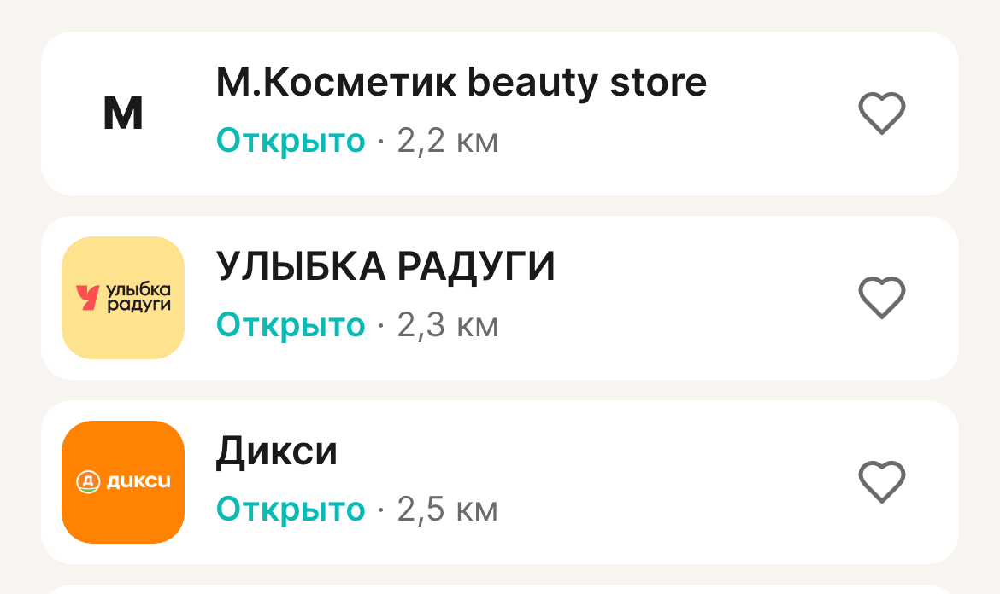
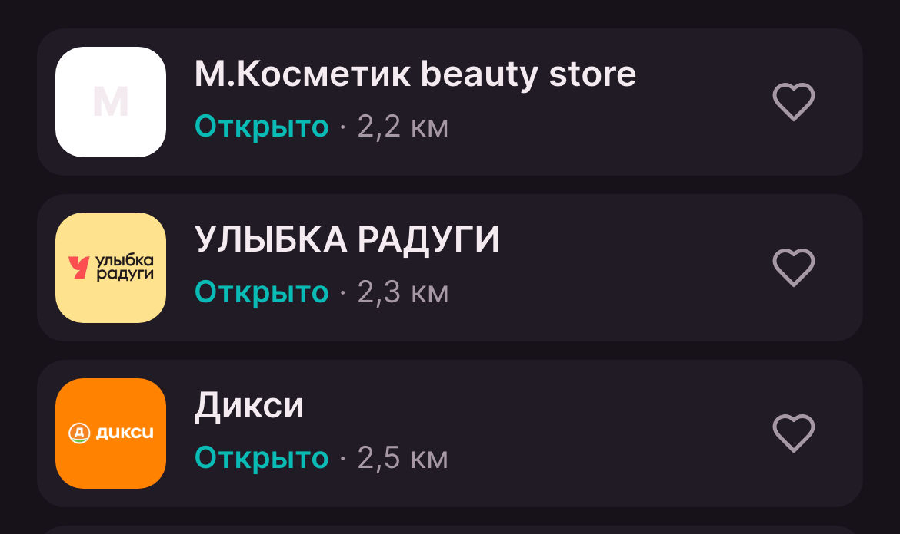
Замерено на стенде: плитка 48×48, радиус 12px, overflow: hidden;
статус — строкой под названием в той же колонке, до действия 179px.
05 в · Проверка
«Категории» и типы заведений: кто их вообще выставляет
Проверил оба набора, которые на этой странице выглядят как «категории»: видимые чипы под поиском и раздел «Категории» в фильтре. Это разные сущности, и судьба у них разная.
| Сущность | Кто пишет | Данные на стенде | Вывод |
|---|---|---|---|
| Категории заведений раздел «Категории» в фильтре |
Только интеграция Kuper — а она за флагом INTEGRATIONS_ENABLED, выключенным везде. В кабинете МСП управления нет; в админке раздел есть, но им не пользуются |
категорий — 0, связей «заведение ↔ категория» — 0 | убрано |
| Типы заведений чипы «Сети-ритейл / Общепит / Услуги / Клубы» |
Проставляется при заявке на подключение (тип деятельности) и редактируется в кабинете МСП и в админке | Сети-ритейл — 26, Общепит — 1, Услуги — 1 | живое |
Что сделано
- Раздел «Категории» убран из фильтра целиком: источник пуст, поэтому блок рендерился одним заголовком без содержимого. Вместе с ним убраны состояние, обработчик и стили.
- Данные и параметр запроса
categories[]сохранены — вернём раздел отдельной задачей вместе с наполнением, ничего не придётся собирать заново. - Типы не тронуты: они фильтруют реальные данные. Но честно скажу — фильтр почти бесполезен на практике: 26 из 28 заведений в одном типе, а «Клубы» дают ноль.
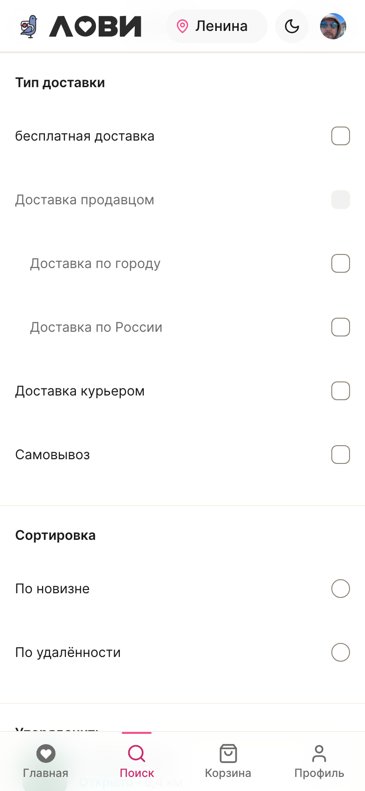
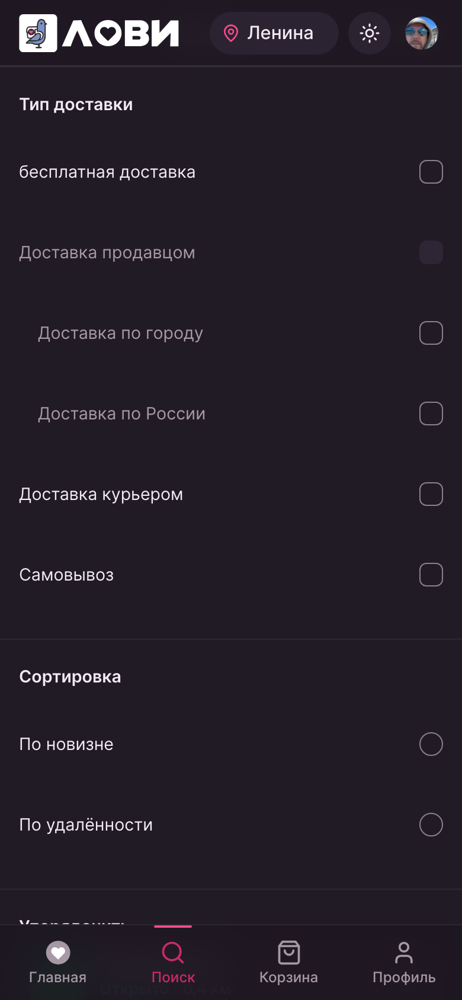
Решение по чипам типов — за вами: убрать их тоже или оставить, пока не пересоберём таксономию. По данным они рабочие, по пользе — сомнительные.
05 г · Дизайн-система
Блоки «липли» по-разному — один ритм и страж против новых отступлений
Замер на живом профиле показал ровно то, что вы описывали: 6 пар блоков с зазором 16px
и 5 пар — с нулём. Причина не в дизайне, а в каскаде: блок навигации объявлял себе
margin: 0 той же специфичности, что и правило контейнера, и побеждал, потому что
шёл в потоке позже.
Стандарт
- Зазор задаёт только контейнер списка. Блоки собственных отступов не имеют вовсе — ни сверху, ни снизу.
- Селекторы с классом блока (специфичность выше) бьют стили компонентов независимо от порядка загрузки CSS — доработка больше не может «перебить» ритм.
- Строки и колонки — один шаг. Двухколоночная раскладка больше не живёт на 22/28px: тот же токен, что у вертикали.
- Один источник значения — токен
--lv-block-gap(16px, шаг шкалы канона).
После правки — все 12 зазоров профиля равны 16px (замер в браузере, проверка автоматизирована).
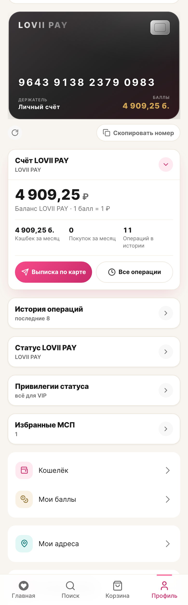
assets/11-profile-rhythm-dark.png.Что накопилось: инвентарь долга
Раз система есть, но каждый агент приносил своё, долг измерим. Проверил весь src:
| Категория | Сколько | Что именно |
|---|---|---|
| Радиусы-литералы | 162 | в т.ч. 39× 8px и 4px×9 — значения вне шкалы канона; рядом 12/14/16px дублируют токены |
| Самодельные тени | 25 | тени мимо токенов soft/lift, включая повтор «0 2px 12px rgba(13,17,27,.04)» в пяти местах |
| Хардкод цветов | 351 | лидируют #ffffff/#fff/#000, дальше — прямые повторы брендовых значений |
Это не «плохой код» — это следы правок, каждая из которых была быстрее системы. Именно поэтому механика важнее единовременной уборки.
Чтобы не повторялось: храповик
Добавлен автоматический страж: тест считает отступления по src и сравнивает
с зафиксированным уровнем. Уровень можно только понижать — новый литерал или новый
файл с ним валит yarn test. Значит следующий агент физически не сможет тихо
добавить «ещё один свой радиус»: он либо возьмёт токен, либо осознанно пересчитает baseline
и объяснит это в коммите. Проверено, что страж срабатывает.
Плюс короткие правила для людей и агентов — что читать до первой строки стилей: ритм, токены, чек-лист нового компонента, антидубли. Лежат в проекте и подключены из гайда, который читают агенты.
План полной ревизии (следующими шагами)
- 1. Радиусы → свести 162 литерала к пяти токенам;
8px/4pxвне шкалы — приоритет (39 объявлений). - 2. Тени → 25 самодельных к паре
soft/lift; проверить, что тень остаётся сигналом интерактивности. - 3. Цвета → 351 хардкод к токенам; сначала
#fff/#000(две трети объёма). - 4. Дубли контролов → свести повторы (кнопки/поля/строки списков) в кит
src/components/Ui. - 5. Экранная ревизия → по одному экрану за проход, с замером, а не «одним героическим рефактором».
05 д · Локализация
«Earned from order #160»: английское в русском интерфейсе
Подпись под названием операции в истории LOVII PAY печатала сырой комментарий
с бэкенда. А писал его бэкенд вперемешку: три строки по-английски
(Earned from order #, Spent on order #,
Refund of cashback for order #) и рядом — по-русски
(«Возврат баллов за отменённый заказ №164»). Приложение показывало как есть.
Корень и что сделано
- Текст интерфейса — ответственность приложения, а не сервера. Подпись берём из своего словаря по типу операции: «Кэшбэк за заказ», «Оплата баллами», «Возврат кэшбэка», «Корректировка баланса». Номер заказа и так есть в заголовке строки.
- Бэкенд перестал писать английское. Правлены все подписи проводок —
и балловые, и рублёвые номинальные: номер заказа остаётся в
order_id, роль сплита — вsplit_role, из текста убрано дублирование. - Уже записанные строки приведены к русскому отдельной миграцией
(
wallet_transactions+ledger_entries): после прогона строк с латиницей — 0.
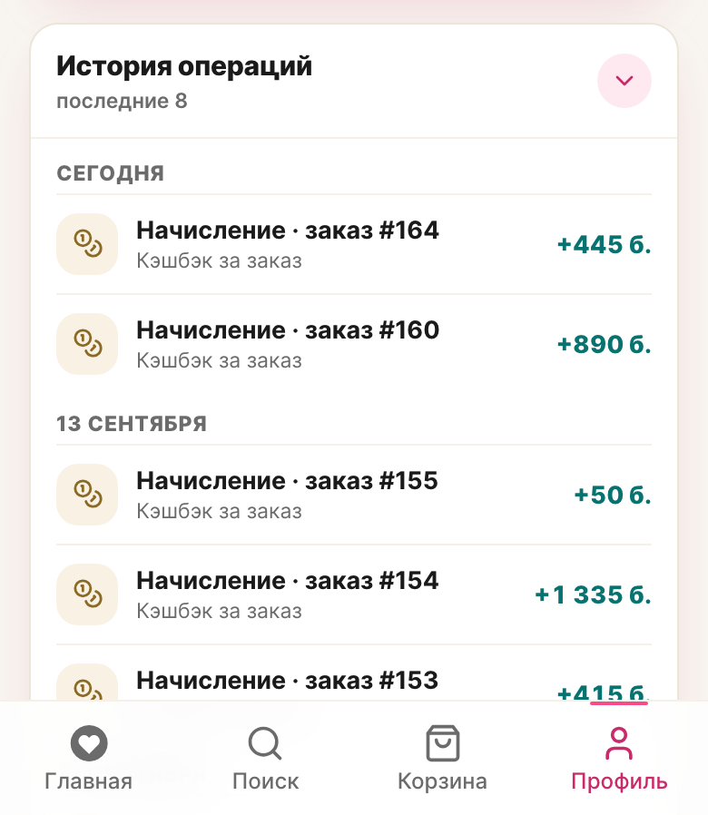
Остальные подписи в проекте проверил: серверные сообщения об ошибках в интерфейс не выводятся (обработчик только логирует), англоязычных строк пользователю больше нет.
05 е · Профиль
Низ профиля — ровно канон, а настройки приведены в порядок
Вы помнили верно: в демо низ собран аккуратно. Проверил — это карточка
.legal-card с надзаголовками групп и строками-разделами, а под ней
центрированная юридическая подпись. В приложении же низ распался на три разные
подачи: отдельная карточка поддержки, голый список ссылок цветом-акцентом и
центрированная подпись — три разных ритма на одном экране.
Что сделано
- Одна карточка: надзаголовки «Документы» / «Поддержка» / «Аккаунт», внутри — строки-разделы с иконкой справа и тонкой линией между ними.
- Выход переехал в настройки (ваше решение). Сначала я положил его в юр. карточку — и это было отступление от канона: там только документы и поддержка. Теперь низ профиля ровно как в демо, а выход — строка карточки «Аккаунт» в настройках.
- Всё на токенах системы: радиус
--lv-r-lg, тень--lv-shadow-soft, цвета ролей; строкиmin-height: 44pxи состоянияactive/focus-visible. - Вертикали сведены к шкале: канонные 13px подтянуты к 12px, высоту строки
держит
min-height— вид как в каноне, но по системе.
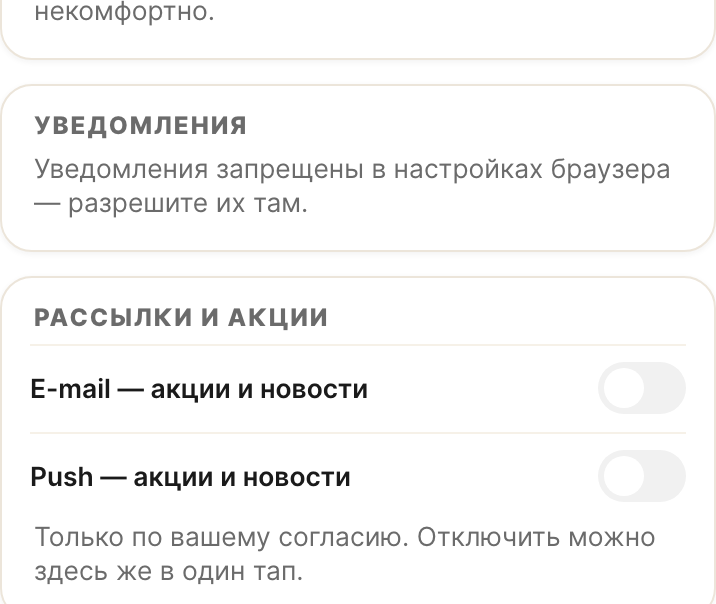
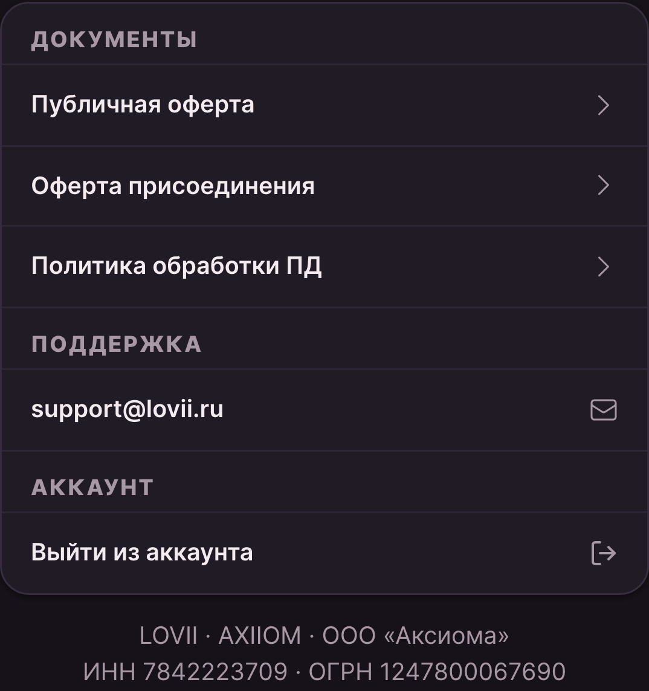
Проверено автоматически: группы Документы / Поддержка, 4 строки, радиуса 16px и тень из токена, юридическая подпись на месте, выхода в юр. блоке нет.
Настройки: из «стены рамок» — в карточки и строки
В шите настроек каждый пункт был отдельной обведённой коробкой — 14 рамок на одном экране, поэтому экран и выглядел разваленным. Переведено на язык канона: карточка (рамка, радиус, мягкая тень) + надзаголовки групп + строки-разделы.
- Выбор (тема, размер текста, анимации) — строка с чипом-галочкой; канонный «выбрано» — тиффани, а не бренд-розовый (розовый в каноне оставлен действиям).
- Переключатели — один китовый тумблер на весь интерфейс: канон
.sw(пилюля 44×26, включено — тиффани). Раньше у профиля и настроек было две разные самодельные реализации. - Выход — строка карточки «Аккаунт» рядом с «Приложением»; шит подтверждения остался один на всё.
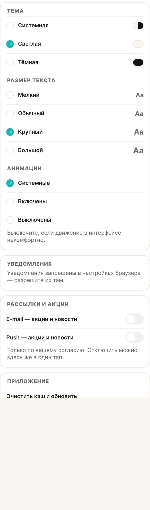
assets/14-settings-dark.png.05 ж · Система
Акценты по темам и ролям, и решение по ритму канона
Вы сказали: акценты должны быть по темам или ролям — «у роли свой акцентный цвет». Так и повелось (у кабинетов он уже свой), но кит об этом не знал: чипы и чекбоксы брали жёсткий бренд-розовый, поэтому внутри кабинета элементы выглядели «чужими». Плюс в каноне гуляли три числа на одно правило отступов. Оба вопроса закрыты решением.
Акценты: одна цепочка вместо трёх привычек
| Роль цвета | Токен | Где применяется |
|---|---|---|
| Выбор | --lv-accent · -soft · -text | Чипы, табы, сегменты, чекбоксы, радио. В клиенте — бренд-розовый, в кабинете роли — цвет роли |
| Состояние | --lv-tiffany | Тумблер включён, «в наличии», «идёт» — всегда, независимо от роли |
| Действие | --lv-pink | CTA, ссылки, фокус — всегда брендовое |
| Премиум | --lv-gold | Лояльность, рейтинг |
Компонент кита про роли не знает: он берёт --lv-accent, а кабинет роли
подменяет цепочку своим цветом. Поэтому одна и та же кнопка, чип или галочка внутри
кабинета Представителя становится тиффани, а внутри кабинета Амбассадора — золотой,
без единой правки в компоненте.
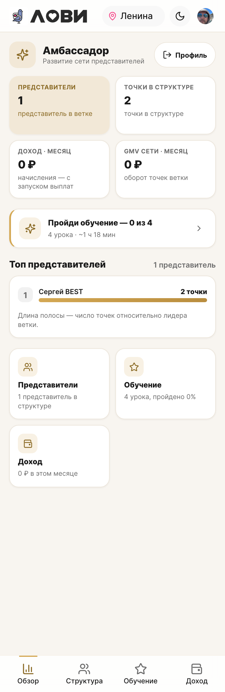
#d4a854).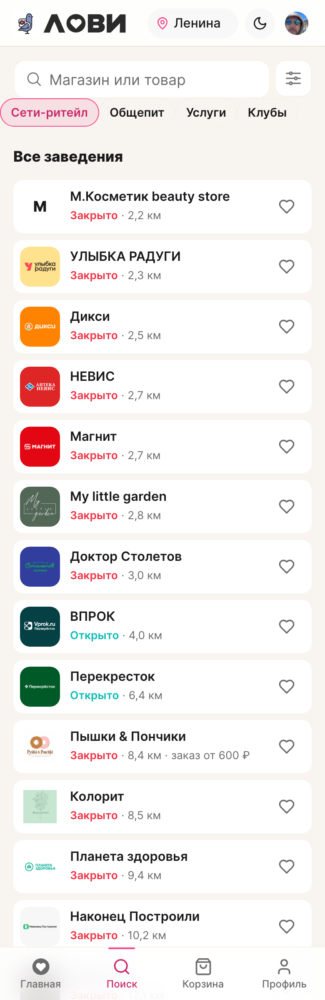
#f64a8a).Проверено замером на стенде: в клиенте --lv-accent = #f64a8a,
в кабинете Амбассадора = #d4a854 с текстовой парой #8a6a25.
Следствие, которое стоит знать: сегмент «Контур счёта» в кошельке был единственным местом
с тоном accent на тиффани — по новому правилу он тоже стал брендовым. Если хотите
вернуть тиффани именно там — скажите, это точечная правка.
Ритм: решено вместо трёх чисел
В каноне на одно правило отступов было три значения: 24px в docs/04,
28px в lovii.css и 14–16px в демо. Принят двухуровневый ритм —
он объясняет все три числа, вместо того чтобы выбирать одно наугад:
- 16px (
--lv-block-gap) — между карточками внутри одной группы или списка. - 24px (
--lv-section-gap) — между смысловыми секциями; это и есть канонное «блок↔блок». - 28px — ритм лендинга и гайда; в приложении не применяется.
Оба решения записаны в правила проекта — следующий агент читает их до первой строки стилей, а отступления от токенов ловит страж дизайн-системы.
06 · Быстрый вход
Логотип на блокировке и «или ПИН, или Face ID»
Экран блокировки и полноэкранный сетап ПИН показывали букву-заглушку «L» в брендовой плашке. Теперь там тот же логотип, что в хедере и на прелоадере. По вашему замечанию способы быстрого входа разведены: включение одного выключает другой.
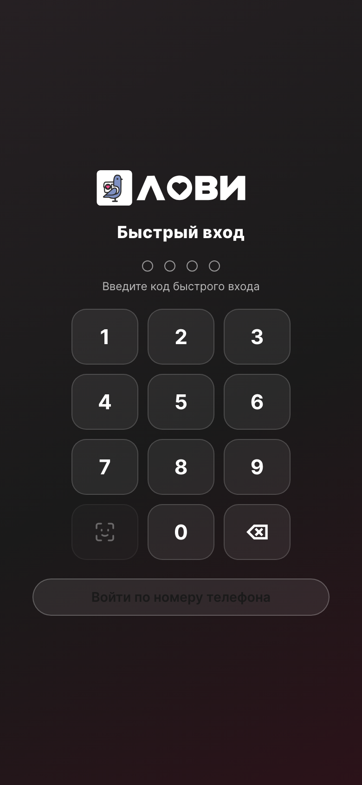
Оговорка: ПИН как запасной путь, когда биометрия недоступна, — распространённая
практика. Если решите вернуть пару, это одна правка в QuickAccessSheet.
07 · Геолокация
Шит адреса: «Сохранить» и «Отменить» в одном ряду
Крестик закрытия висел в правом верхнем углу карты — высоко и малозаметно. Теперь в футере шита два столбца: «Отменить» рядом с «Оставить этот адрес». Автоопределение адреса при первом входе уже работало через обратный геокод по GPS и не блокирует пользователя — уточнение до квартиры остаётся на момент заказа.
08 · Проверки
Проверки на живом стенде — 46 из 46
Скрипт открывает реальный стенд с авторизованной сессией и проверяет факты в DOM и вычисленных стилях — не «на глаз».
| Проверка | Результат |
|---|---|
| Хедер: адрес без города | «Ленина» |
| Хедер: без типового слова «улица» | ок |
| Хедер: показано название улицы | ок |
| Хедер: пилюля шире прежних 76px | 109px |
| ДС: фантомный токен сегмент-контроля определён | #1a1a1a |
| Витрина: кнопки избранного на карточках | 15 шт. |
| Витрина: сердце в размер глифа, не с кнопку | 20×20px |
| Витрина: тап-таргет действия ≥ 36px | 44px |
| Витрина: действие не перекрывает текст и название | ок |
| Витрина: плитка логотипа выше 40px | 48×48 |
| Витрина: плитка скруглена (по шкале ДС) | 12px |
| Витрина: картинка обрезается по контуру плитки | hidden |
| Витрина: статус — строкой под названием | ок |
| Витрина: статус не доходит до действия | 179px |
| Фильтр: секции отрисованы | 3 раздела |
| Фильтр: нет пустых секций | ок |
| Фильтр: раздела «Категории» больше нет | ок |
| Профиль: у всех блоков один и тот же зазор | 16px |
| Профиль: замеренные зазоры совпадают | 12 зазоров |
| История операций: строки найдены | ок |
| История операций: в подписях нет английского | Кэшбэк за заказ |
| Низ профиля: юр. карточка отрисована | 2 группы |
| Низ профиля: четыре строки (3 документа + поддержка) | 4 |
| Низ профиля: выхода в юр. блоке нет (он в настройках) | ок |
| Настройки: карточки-группы отрисованы | 5 карточек |
| Настройки: строки-выборы на месте | radio 10 · switch 2 |
| Настройки: карточка без «стены коробок» | 0 обведённых |
| Настройки: выход здесь | ок |
| Акцент клиента — бренд-розовый | #f64a8a |
| В кабинете амбассадора акцент подменён золотом | #d4a854 |
| Низ профиля: радиус и тень из токенов | 16px |
| Низ профиля: юр. подпись на месте | ИНН/ОГРН |
| Профиль: список «Избранные МСП» отрисован | 2 строки |
| Профиль: имена точек в списке | ок |
| Профиль: сердце «убрать» в размер глифа | 20px |
| Профиль: строка читается как «в избранном» (залитое, aria-pressed) | ок |
| Заказы: отступ под таббар ≥ 64px | 72px |
| Форма адреса: подсказки открываются при вводе | ок |
| Форма адреса: уход в следующее поле закрывает подсказки | ок |
| Форма адреса: фокус уходит в следующее поле | ок |
| Локскрин: экран блокировки показан | ок |
| Локскрин: логотип — изображение, не буква | ок |
| ПИН-сетап: логотип-изображение | ок |
09 · Дальше
Что не закрыто в этой сессии
Вы просили «собрать по всем экранам и навести полный порядок» — часть пунктов крупнее точечных правок и требует решения по составу перед реализацией.
| Приоритет | Пункт | Состав |
|---|---|---|
| P0 | Экран «Безопасность» в настройках | Устройства (активные сессии/входы), связанные мессенджеры MAX/VK/Telegram с инструкцией по привязке, видимость маршрута оповещений (что и куда уходит), назначение e-mail — оповещения или только восстановление. |
| P0 | Пересборка композиции настроек профиля | Группировка по смыслу: аккаунт → безопасность → оповещения → приложение; порядок и подписи по практикам. |
| P1 | Избранное → сервер | Маршрут и таблица в ядре, синхронизация между устройствами. |
| P1 | Типографика | Решение по дисплейному/заголовочному начертанию — сейчас весь интерфейс на Inter, отсюда ощущение «шрифт не выбран». |
| P2 | Сплошной обход тем | Светлая/тёмная по всем экранам (в этой сессии — точечно). |
Про типографику отдельно: само семейство Inter на стенде грузится корректно (проверено — файлы отдаются 200). Ощущение «простого шрифта» — про отсутствие дисплейного начертания для заголовков и работы с оптическим размером, а не про сбой загрузки.
10 · Итог
Файлы, коммит и гейт
- 29 файлов изменено,
+560 / −171. - Коммиты в
lovii-app(веткаstaging):efd156bосновной блок правок ·ad3c7d2иконка избранного ·3d17373место избранного в раскладке ·e9d8984карточка витрины ·5281b21пустой раздел «Категории» ·1c3ceb0ритм блоков и страж ·9375bc3локализация подписей ·979f9c3низ профиля ·1c0a970канон низа + настройки. Вlovii-core:6f5c5b0русские подписи проводок. Всё локально, не пущено. - Точка возврата: тег
checkpoint/audit-2026-09-15(4eb26c7). - Тесты:
test:unit713/714 — единственное падение это страж дизайн-системы, поймавший radius-литерал в файле, который прямо сейчас правит другой агент (его незакоммиченную работу не трогал).type-check🟢,build-only🟢. - Стенд
:8081уже отдаёт новую сборку (distпримонтирован в контейнер).